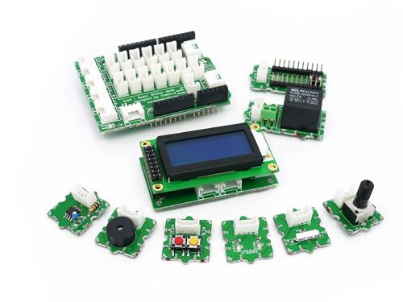
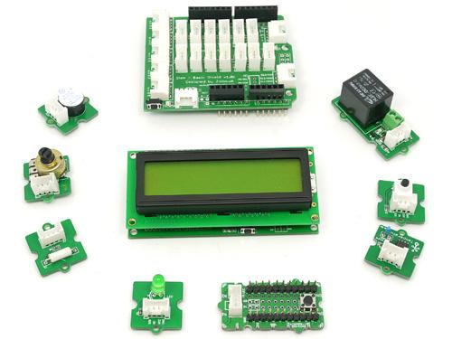

The GROVE - Starter Kit of GROVE System is a modular, safe and easy to use group of items that allow you to minimise the effort required to get started with microcontroller-based experimentation and learning. Although there are many choices available for microcontroller development environments, the Grove system will work very well with the Arduino or Seeeduino board.
Clicking on the images below will take you to the documentation for the corresponding version.
|  |
 |
 |